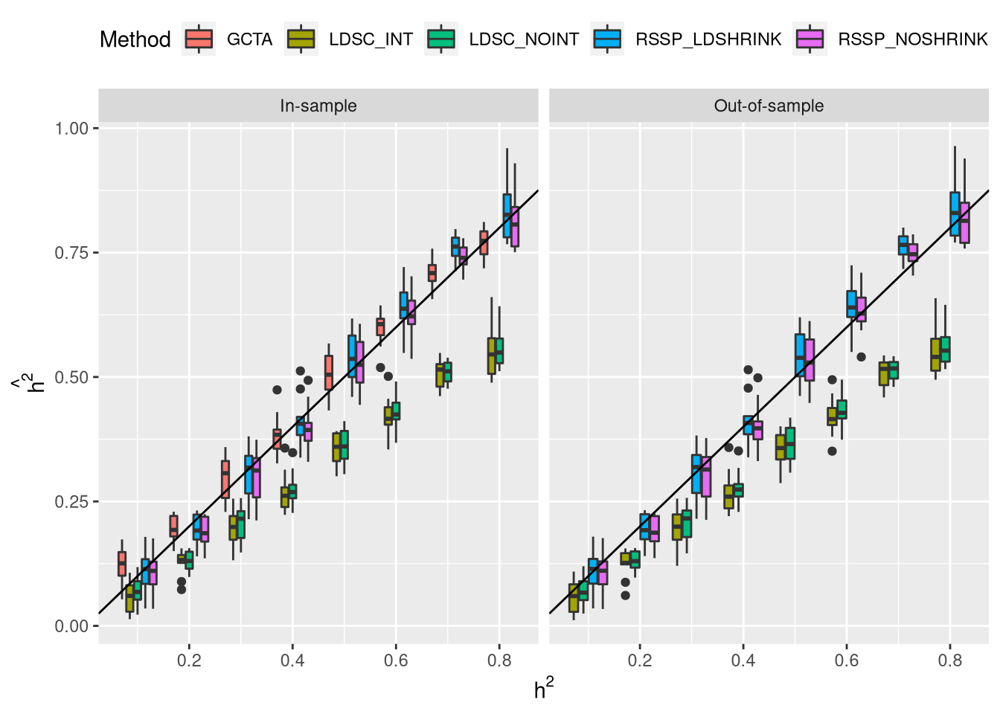

Last updated: 2020-04-15
Checks: 6 1
Knit directory: PolygenicRSS/analysis/
This reproducible R Markdown analysis was created with workflowr (version 1.4.0). The Checks tab describes the reproducibility checks that were applied when the results were created. The Past versions tab lists the development history.
Great! Since the R Markdown file has been committed to the Git repository, you know the exact version of the code that produced these results.
Great job! The global environment was empty. Objects defined in the global environment can affect the analysis in your R Markdown file in unknown ways. For reproduciblity it’s best to always run the code in an empty environment.
The command set.seed(12345) was run prior to running the code in the R Markdown file. Setting a seed ensures that any results that rely on randomness, e.g. subsampling or permutations, are reproducible.
Great job! Recording the operating system, R version, and package versions is critical for reproducibility.
Nice! There were no cached chunks for this analysis, so you can be confident that you successfully produced the results during this run.
Using absolute paths to the files within your workflowr project makes it difficult for you and others to run your code on a different machine. Change the absolute path(s) below to the suggested relative path(s) to make your code more reproducible.
| absolute | relative |
|---|---|
| /home/nwknoblauch/Dropbox/PolygenicRSS/workflow/results/sim_ukb/ | ../workflow/results/sim_ukb |
Great! You are using Git for version control. Tracking code development and connecting the code version to the results is critical for reproducibility. The version displayed above was the version of the Git repository at the time these results were generated.
Note that you need to be careful to ensure that all relevant files for the analysis have been committed to Git prior to generating the results (you can use wflow_publish or wflow_git_commit). workflowr only checks the R Markdown file, but you know if there are other scripts or data files that it depends on. Below is the status of the Git repository when the results were generated:
Ignored files:
Ignored: .RData
Ignored: .Rhistory
Ignored: .Rproj.user/
Ignored: .httr-oauth
Ignored: analysis/.Rhistory
Ignored: analysis/PolygenicEstimation_cache/
Ignored: code/.Rhistory
Ignored: code/scripts/.Rhistory
Ignored: code/snakemake_files/.RData
Ignored: code/snakemake_files/.Rhistory
Ignored: code/snakemake_files/.snakemake/
Ignored: code/snakemake_files/eqtl_check.RDS
Ignored: code/snakemake_files/ldsc_est_gwas_genome/
Ignored: code/snakemake_files/parameter_generation/
Ignored: code/snakemake_files/subset_data_pipeline/
Ignored: code/snakemake_files/temp_map_19.RDS
Ignored: code/snakemake_files/temp_target_19.RDS
Ignored: code/workflow_params.json~
Ignored: data/rep_polygenic/
Untracked files:
Untracked: _workflowr.yml
Untracked: analysis/AFvsp.Rmd
Untracked: analysis/ChunkingEffect.Rmd
Untracked: analysis/ChunkingLD.Rmd
Untracked: analysis/ConfoundingSimulations.Rmd
Untracked: analysis/DownSamplingResults.Rmd
Untracked: analysis/EVD_SVD.Rmd
Untracked: analysis/GREML_RSSp_UKB.Rmd
Untracked: analysis/GRM_estimation.Rmd
Untracked: analysis/GenomeWideSimulation.Rmd
Untracked: analysis/Heritability.Rmd
Untracked: analysis/LDshrink_effect.Rmd
Untracked: analysis/MeetingSummary1.Rmd
Untracked: analysis/Normalization.Rmd
Untracked: analysis/Optimiation.org
Untracked: analysis/Optimization.Rmd
Untracked: analysis/RSSR_PolygenicData.Rmd
Untracked: analysis/RSSp.stan
Untracked: analysis/RSSp2.stan
Untracked: analysis/RSSp_LDshrink.Rmd
Untracked: analysis/RSSp_Large_WTCC_noConfounding.Rmd
Untracked: analysis/RSSp_Largest_Simulation.Rmd
Untracked: analysis/RSSp_WTCC_noConfounding.Rmd
Untracked: analysis/RSSp_confounding.Rmd
Untracked: analysis/RSSp_ldsc_highPVE_chr1.Rmd
Untracked: analysis/RSSp_ldsc_highPVE_hr.Rmd
Untracked: analysis/RSSp_ldsc_noConfounding.Rmd
Untracked: analysis/Running_ldetect.Rmd
Untracked: analysis/SPVE.Rmd
Untracked: analysis/SharedSNPAnalysis (dell-desktop's conflicted copy 2018-09-04).Rmd
Untracked: analysis/SharedSNPAnalysis.Rmd
Untracked: analysis/Summary.Rmd
Untracked: analysis/Summary.org
Untracked: analysis/Vanilla_LDSC.Rmd
Untracked: analysis/chr_16.Rmd
Untracked: analysis/derby.log
Untracked: analysis/direct_easy.Rmd
Untracked: analysis/eQTL_Pipelines.Rmd
Untracked: analysis/fquh_mod.RDS
Untracked: analysis/importFramExp.Rmd
Untracked: analysis/ldmap.org
Untracked: analysis/ldshrink_test.Rmd
Untracked: analysis/ltximg/
Untracked: analysis/nquh_mod.RDS
Untracked: analysis/out_res.RDS
Untracked: analysis/pvv_opt.Rmd
Untracked: analysis/quh_mod.RDS
Untracked: analysis/scz_data.org
Untracked: analysis/shrinkage_effect.Rmd
Untracked: analysis/ukb_dl.Rmd
Untracked: analysis/ukb_pve_confounding.Rmd
Untracked: code/.directory
Untracked: code/.ipynb_checkpoints/
Untracked: code/RSSp_abstract.org
Untracked: code/RSSp_abstract_notes.org
Untracked: code/RSSp_talk_notes.org
Untracked: code/RSSp_talk_notes.pdf
Untracked: code/RSSp_talk_notes.tex
Untracked: code/Untitled.ipynb
Untracked: code/Untitled1.ipynb
Untracked: code/cpu\scores
Untracked: code/dl_1kg.org
Untracked: code/ideas.org
Untracked: code/ltximg/
Untracked: code/params/
Untracked: code/quhdypi/
Untracked: code/rssp.yml
Untracked: code/scikit_allel.org
Untracked: code/scripts/#break_df.R#
Untracked: code/scripts/#evd_1kg_h5.R#
Untracked: code/scripts/#map_uh_covar.R#
Untracked: code/scripts/RSSp_ldsc_results.Rmd
Untracked: code/scripts/bin/
Untracked: code/scripts/ldsc_rssp.Rmd
Untracked: code/scripts/matlab2h5.py
Untracked: code/scripts/vcf-liftover.sh
Untracked: code/scripts/vcf2allel.py
Untracked: code/skl_vf.ipynb
Untracked: code/snakemake_files/#trait_snakefile#
Untracked: code/snakemake_files/EUR.samples
Untracked: code/snakemake_files/UKBB_mf.csv
Untracked: code/snakemake_files/config.yaml
Untracked: code/snakemake_files/environment_rssp.yml
Untracked: code/snakemake_files/envs/ldsc.yml
Untracked: code/snakemake_files/ldi.RData
Untracked: code/snakemake_files/ldsc/
Untracked: code/snakemake_files/rssp_ldsc_report/
Untracked: code/snakemake_files/sim.RData
Untracked: code/snakemake_files/sum.RData
Untracked: code/snakemake_files/vert.txt
Untracked: code/t_scripts/
Untracked: code/test_py.py
Untracked: data/GREML_h2.xlsx
Untracked: data/LDSC_UKB_SumStatManifest.tsv
Untracked: data/NCBI34_to_GRCh38.chain.gz
Untracked: data/SNP_ws.RData
Untracked: data/Snakemake_inputs/
Untracked: data/all_df.RDS
Untracked: data/direct_sim_1kg.RDS
Untracked: data/journal.pgen.1006711.s002.xlsx
Untracked: data/journal.pgen.1006711.s003.xlsx
Untracked: data/ldsc_h2.txt.gz
Untracked: data/ntr_results.RData
Untracked: data/temp_ws.RData
Untracked: data/ukb31063_h2_all.02Oct2019.tsv.gz
Untracked: docs/#RSSp_WTCC_noConfounding.Rmd#
Untracked: docs/RSSp.stan
Untracked: docs/RSSp2.stan
Untracked: docs/Summary.org
Untracked: docs/derby.log
Untracked: docs/figure/LDshrink_effect.Rmd/
Untracked: docs/figure/RSSp_Large_WTCC_noConfounding.Rmd/
Untracked: docs/figure/RSSp_WTCC_noConfounding.Rmd/
Untracked: docs/figure/RSSp_ldsc_highPVE_chr1.Rmd/
Untracked: docs/figure/RSSp_ldsc_highPVE_hr.Rmd/
Untracked: docs/figure/SharedSNPAnalysis.Rmd/
Untracked: docs/fquh_mod.RDS
Untracked: docs/log4j.spark.log
Untracked: docs/ltximg/
Untracked: docs/nquh_mod.RDS
Untracked: docs/quh_mod.RDS
Untracked: docs/scz_data.org
Untracked: dosage.scan.RData
Untracked: dosage.snp.RData
Untracked: foobar.csv
Untracked: org/
Untracked: output/FRAM/
Untracked: output/RSSp_snakemake/
Untracked: output/bd/
Untracked: output/pve/
Untracked: output/rssp_res/
Untracked: workflow/
Unstaged changes:
Modified: PolygenicRSS.Rproj
Modified: analysis/ConfoundingAdj.Rmd
Modified: analysis/DownsamplingResults2.Rmd
Modified: analysis/Exp_Heritability.Rmd
Modified: analysis/IndependenceCheck.Rmd
Modified: analysis/Meeting_Notes.Rmd
Modified: analysis/New_WholeGenome.Rmd
Modified: analysis/OutOfSampleLD.Rmd
Modified: analysis/OutOfSampleLD_smallPVE.Rmd
Modified: analysis/PolygenicEstimation.Rmd
Modified: analysis/RSSP_standard_error.Rmd
Modified: analysis/RSSp_Chunksize_Investigation.Rmd
Modified: analysis/RSSp_Large_Simulation.Rmd
Modified: analysis/RSSp_Posterior.Rmd
Modified: analysis/RSSp_Prediction.Rmd
Modified: analysis/RSSp_ldsc.Rmd
Modified: analysis/RSSp_ldsc_gwas_direct_noConfounding.Rmd
Modified: analysis/RSSp_ldsc_highPVE.Rmd
Modified: analysis/SimulationPipeline.Rmd
Modified: analysis/_site.yml
Modified: analysis/about.Rmd
Modified: analysis/chr_2.Rmd
Deleted: analysis/chunks.R
Modified: analysis/index.Rmd
Modified: analysis/license.Rmd
Modified: analysis/lnzDist.Rmd
Modified: analysis/results.Rmd
Modified: analysis/simulatingGWAS.Rmd
Modified: analysis/simulation.Rmd
Modified: analysis/ukb_pve.Rmd
Modified: code/TF_LDshrink.ipynb
Modified: code/dask_LDshrink.ipynb
Modified: code/scripts/evd_1kg_h5.R
Modified: code/scripts/summarise_gcta.R
Modified: code/scripts/ukb_dl.R
Modified: code/snakemake_files/LD_snakefile
Modified: code/snakemake_files/Snakefile
Modified: code/snakemake_files/converters_snakefile
Modified: code/snakemake_files/grm_snakefile
Modified: code/snakemake_files/param_snakefile
Modified: code/snakemake_files/ukb_snakefile
Note that any generated files, e.g. HTML, png, CSS, etc., are not included in this status report because it is ok for generated content to have uncommitted changes.
These are the previous versions of the R Markdown and HTML files. If you’ve configured a remote Git repository (see ?wflow_git_remote), click on the hyperlinks in the table below to view them.
| File | Version | Author | Date | Message |
|---|---|---|---|---|
| Rmd | f1b7365 | CreRecombinase | 2020-04-15 | workflowr::wflow_publish(“analysis/ukb_sim.Rmd”) |
First, I randomly selected 12,000 samples from the UK biobank. I computed a GRM from these 12000, and created a list of 11309 unrelated individuals (GRM cutoff 0.05). I then sampled without replacement to obtain 10000 individuals for my GWAS simulation.
I used GCTA to simulate broadly polygenic traits from 1,077,146 variants that roughly corresponds to the Hapmap3 SNP list. It should be noted that I did not check to ensure that these variants varied in my subsample. I assume that GCTA drops causal variants that do not vary in the sample. These variants are the variants that the Neale lab used for LD score regression on UK biobank traits.
GCTA uses the additive genetic model:
\[y_j = \sum_i(w_{i,j}u_i) + e_j\] where \(w_{i,j} = (x_{i,j} - 2p_i) / \sqrt{2p_i(1 - p_i)}\), (which is undefined for \(p_i=0\) and \(p_i=1\)). \(e_j\) is the residual effect generated from a normal distribution with a mean of 0 and variance of \(\text{Var}(\sum_i(w_{i,j}u_i))(1 / h^2 - 1)\).
I simulated traits with heritabilities of 0.2, 0.1 and 0.5. For each heritability value ,GCTA simulates one vector of “true” effects, and then simulates 10 replicates from the “true” effect.
I used the plink2 glm function to fit the gwas, and used 10 principle components (also obtained from plink2) as covariates, and a 5 percent MAF threshold.
I estimated individual-level heritability using GCTA’s GREML, again using 10 PCs as continuous covariates.
I estimated LD scores from the 10000 samples, then estimated heritability (with and without an intercept) using those LD scores and the summary statistics.
I ran RSSp on the gwas summary stats using the 10000 samples as the reference LD panel.

sessionInfo()R version 3.6.3 (2020-02-29)
Platform: x86_64-pc-linux-gnu (64-bit)
Running under: Manjaro Linux
Matrix products: default
BLAS/LAPACK: /usr/lib/libopenblas_haswellp-r0.3.9.so
locale:
[1] LC_CTYPE=en_US.UTF-8 LC_NUMERIC=C
[3] LC_TIME=en_US.UTF-8 LC_COLLATE=en_US.UTF-8
[5] LC_MONETARY=en_US.UTF-8 LC_MESSAGES=en_US.UTF-8
[7] LC_PAPER=en_US.UTF-8 LC_NAME=C
[9] LC_ADDRESS=C LC_TELEPHONE=C
[11] LC_MEASUREMENT=en_US.UTF-8 LC_IDENTIFICATION=C
attached base packages:
[1] stats graphics grDevices utils datasets methods base
other attached packages:
[1] EigenH5_2.0.7 ldmap_1.5.2 vroom_1.2.0.9000 magrittr_1.5
[5] fs_1.3.2.9000 forcats_0.4.0 stringr_1.4.0 dplyr_0.8.99.9002
[9] purrr_0.3.3.9000 readr_1.3.1 tidyr_1.0.2.9000 tibble_3.0.0
[13] tidyverse_1.2.1 plotly_4.9.0.9000 ggplot2_3.3.0
loaded via a namespace (and not attached):
[1] Rcpp_1.0.4.6 lubridate_1.7.4 lattice_0.20-38
[4] assertthat_0.2.1 rprojroot_1.3-2 digest_0.6.25
[7] R6_2.4.1 cellranger_1.1.0 backports_1.1.5
[10] evaluate_0.14 httr_1.4.1 highr_0.8
[13] pillar_1.4.3.9001 rlang_0.4.5.9000 lazyeval_0.2.2
[16] readxl_1.3.1 rstudioapi_0.11 data.table_1.12.8
[19] whisker_0.4 rmarkdown_2.1 labeling_0.3
[22] htmlwidgets_1.3 bit_1.1-15.2 munsell_0.5.0
[25] broom_0.5.2 compiler_3.6.3 modelr_0.1.4
[28] xfun_0.12 pkgconfig_2.0.3 htmltools_0.4.0
[31] tidyselect_1.0.0.9000 workflowr_1.4.0 fansi_0.4.1
[34] viridisLite_0.3.0 crayon_1.3.4 withr_2.1.2
[37] grid_3.6.3 nlme_3.1-144 jsonlite_1.6.1
[40] gtable_0.3.0 lifecycle_0.2.0.9000 git2r_0.26.1
[43] scales_1.1.0 RcppParallel_4.4.4 cli_2.0.2
[46] stringi_1.4.6 farver_2.0.3 xml2_1.2.2
[49] ellipsis_0.3.0.9000 generics_0.0.2 vctrs_0.2.99.9010
[52] tools_3.6.3 bit64_0.9-7 glue_1.3.2
[55] hms_0.5.3 yaml_2.2.1 colorspace_1.4-1
[58] rvest_0.3.4 knitr_1.28 haven_2.1.0